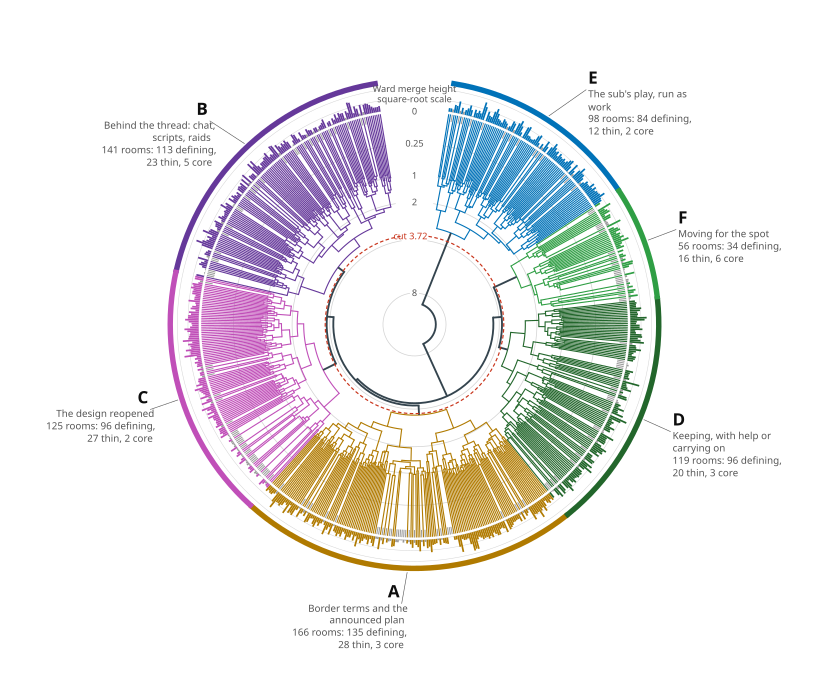
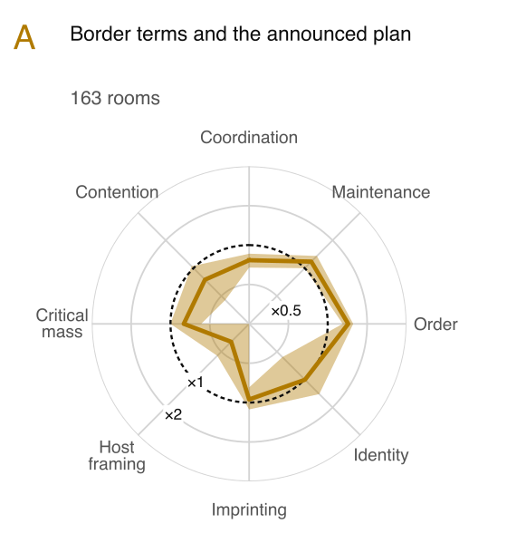
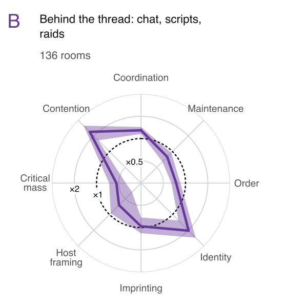
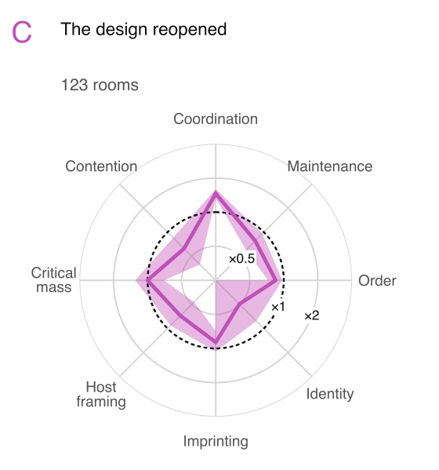
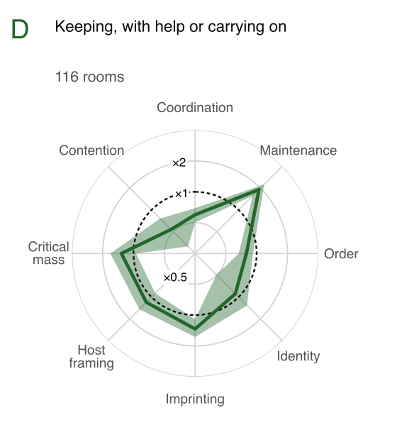
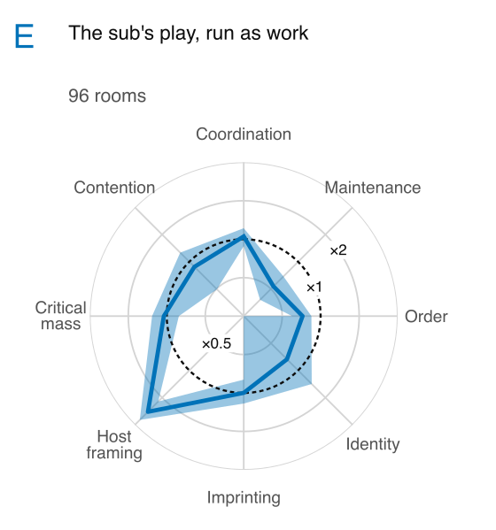
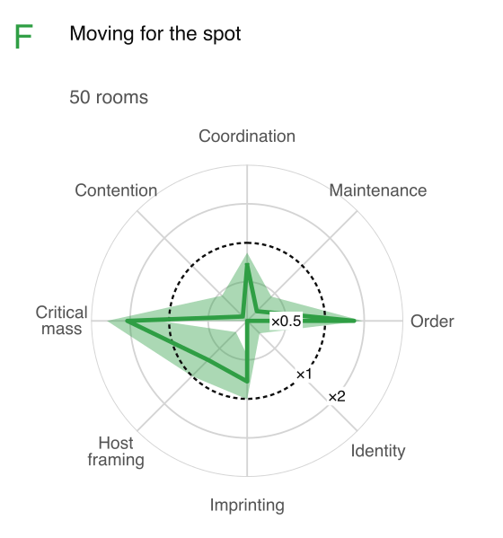
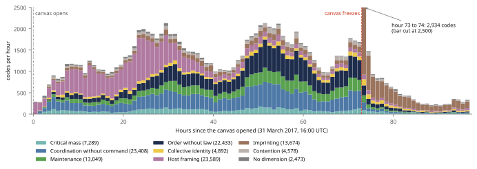

From form to post
The aggregator identified six candidate organizational forms across 705 communities. Start with the forms, compare communities on the same branch, then follow r/PlaceNL’s codes back to the posts its coder read.

- Border terms and the announced plan 166 communities
Communities agreed on borders and announced plans. A deal held only as far as the news of it travelled.
- Behind the thread: chat, scripts, raids 141 communities
Different communities relied on chat, scripts or calls to raid. The model grouped them together but found little evidence that the three went together.
- The design reopened 125 communities
Finishing a design gave members a chance to change it. People maintaining the artwork could still resist the change.
- Keeping, with help or carrying on 119 communities
Some communities helped neighbours once their own artwork was safe. Others found ways to carry on as the event drew to a close.
- The sub’s play, run as work 98 communities
Communities made an April Fools’ activity into work: they enforced rules, tested claims and kept a record. Their canvas work left a thinner trace.
- Moving for the spot 56 communities
Communities asked for space, lost a site and built again elsewhere. Losing the site prompted more moves than a shortage of hands.
What put two communities on the same branch?
The tree gives two thirds of the weight to the changes a community sought in the model, and one third to its coded concepts. The spider plots compare average patterns across forms. In form C, reopening the design, coordination accounts for 40.3% of selected changes on average, against 27.6% across the 684 communities that proposed changes.
Where each of the six forms changes the model
Each spoke is one of the eight dimensions. The dotted ring marks the average share among the 684 communities with selected changes. The coloured line shows the form’s mean. A point one ring farther out represents twice the share. Shading shows the 95% interval around the mean. Below each plot is the dimension whose share stands furthest above average.

Form AOrder · 1.43× average
Form BContention · 2.39× average
Form CCoordination · 1.46× average
Form DMaintenance · 1.91× average
Form EHost framing · 2.87× average
Form FCritical mass · 2.10× average


The counts in the plots include only communities that contributed changes. The tree lists all members of each form. Read the source figures and compare the coded concepts.
Compare a community with its form
Two Dutch details recur in form B. Changing a script’s target took someone with permission, and a helper who stayed off Discord could miss the tools shared there. Other members of form B showed different combinations of chat, scripts and raids. Read the aggregator’s account of r/PlaceNL in form B.
The tree compared changes and codes at several levels of the coding scheme. These strips show the shares at one level, the eight dimensions. The form average gives each community equal weight and omits records with no values for that strip.
What counts as a change?
When the aggregator returned its model, each coder could point to something it missed. In r/PlaceNL, the same script that protected the flag erased the canal houses members wanted to add. The Dutch coder challenged the claim about settling a design. Corrections from r/OnePiece and r/leagueoflegends prompted the change to the model’s claim about repair. Trace the change to the two Dutch records.
Which model were the communities changing?
The first population model linked recruitment, building and repair. The aggregator returned it to the community coders so they could check each claim against their cases.
The revised model shown here explains why repair can work against a redesign. Keepers restore the version they know. In six communities, keepers recognized a new design without being told, a limit the re-check uncovered.
Explore the revised model and its account · Compare the two versions

Where did the model come from?
The aggregator compared what the community coders had found. It grouped 7,844 local themes into 197 third-order themes, 28 fourth-order themes and eight dimensions. Those dimensions gave it the terms in which to build the model.

One Dutch comment sent volunteers to Discord because the plan changed every hour. The coder labelled it sending people to Discord because the plan changes every hour and assigned it to the theme moving live coordination into Discord. The aggregator grouped that theme under backstage decision-making within coordination without command. Follow code c0004 through the scheme.
What did one coder leave behind?
The r/PlaceNL team read 701 posts and comments and produced 246 codes and 21 themes. Three outputs let you check how the team understood this community.
- Case accountHow the Dutch community organized, including decisions that moved off Reddit.
- Codes and themesMembers’ words, the labels attached to them and how each theme entered the population scheme.
- TimelineEvents in order, from the call for Dutch coordination on the second day to the close and its aftermath.
What made the cases comparable?
The collection scripts put the pixel changes and subreddit discussions on the same event clock. The pixel log records where and when the canvas changed. Posts and comments record what participants asked, planned and disputed. Atlas links identify communities associated with artworks.
Participants wrote about the event in 2,796 subreddits. The study coded 705 communities credited with artwork whose members wrote about r/place while the canvas was open. Each coder received its own community’s record under a common coding procedure. The coder documents identify the two versions used.
Download the source records · Trace the census · Find the files produced at each stage